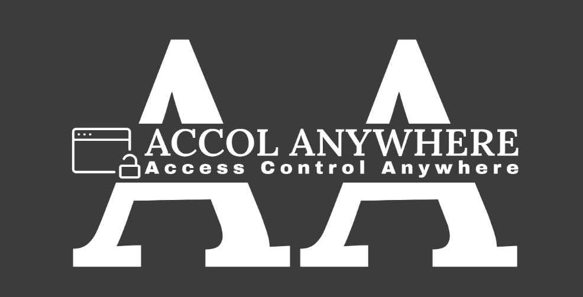
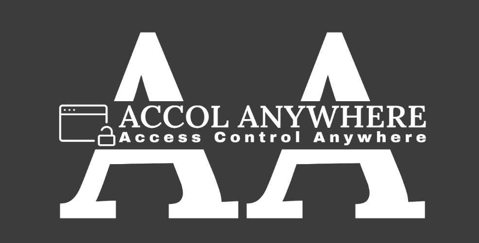
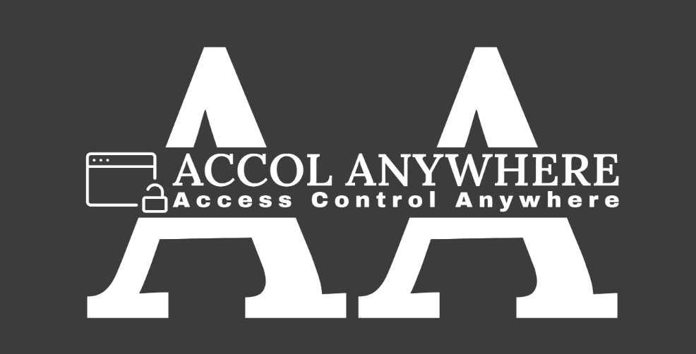
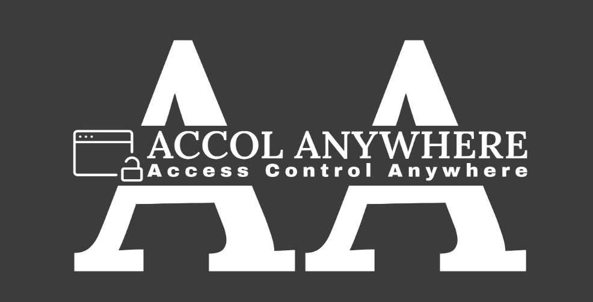

FROM THE PROBLEM PEOPLE MOOST ASKED
Ambition gives us aims, objects, goals and targets of life. It gives us a sense of direction and motivation towards our goals in the life. I would like to start up my own business. The main reason why I want to start up a business is because I do not want to be stuck in a job until I retire, or even worse go crazy working for one specific company. Securing a job at a place that doesn't have much growth potential will be very boring and we all know it takes a lot of time to get out of that hole once you decide on an independent path.
I am an innovative person and I see a lot of opportunity in computer and internet related business. I love to be able to work independently and create something that is my own. I would use my creativity and problem-solving skills to their fullest extent.
I am interested in the computer field because I enjoy working with computers and like to stay up to date on technology. I have a strong work ethic and would like to have my own business which will allow me to make my own hours.
I enjoy helping people and would like to be able to make a career out of that. It is my goal to use my skills in order to continue helping people as much as possible. I would like to be able rely on my ability to solve problems.
created with
Website Builder Software .